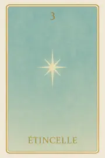
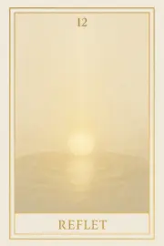
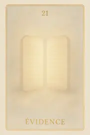
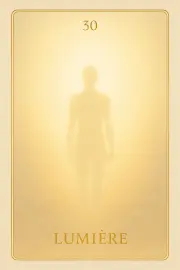
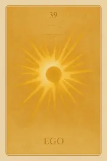
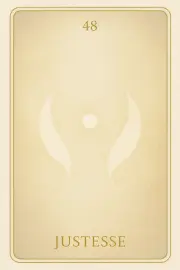
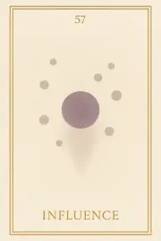
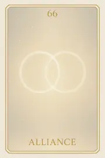
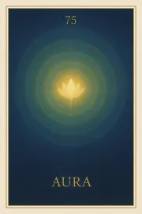

Famille 3 – Amon-Rê (Jupiter)
La troisième famille de l’Oracle Sia est reliée à Jupiter et à Amon-Rê. Elle explore l’expansion de l’âme vers l’autre, la résonance relationnelle, et les liens profonds qui façonnent l’identité au contact du vivant. Ces cartes invitent à reconnaître ce qui s’ouvre en nous lorsque nous entrons en lien, en résonance ou en reliance avec le monde autour de nous.
Carte 3 – Etincelle
Mots-clés : Lumière intérieure, Feu créateur naissant, Pouvoir divin latent, Éveil silencieux, Promesse de rayonnement
Chiffre caché : 84
Lecture inversée : 8 → 4
Divinité principale : : Amon-Rê
Planète secondaire : Soleil
Divinité secondaire : Râ
Interprétation de la carte 3 : Etincelle (droite)
Lecture intuitive rapide
Après avoir senti la densité résiduelle de la Terre, l’âme ressent sa propre lumière intérieure. Pas encore un feu, pas encore un mouvement, mais l’éveil pur d’une énergie créatrice silencieuse. L’étincelle naît au centre de l’âme : un rappel de sa puissance, un premier signe de sa propre nature divine.
1. Caractère de la personne
L'âme ressent sa propre lumière naissante. Elle est un foyer intérieur silencieux, une promesse de pouvoir créateur encore caché.
2. Plan affectif
Les attachements n'interfèrent pas : c’est un éveil intime, une chaleur douce, centrée sur l’être seul.
5. Plan spirituel
Spirituellement, ÉTINCELLE est le premier signal du feu divin intérieur. Sous l’influence d’Amon-Rê, l’âme se rappelle sa capacité à créer, éclairer et évoluer.
Carte 3 : Etincelle (inversée)
1. Caractère de la personne
L’âme ignore son propre foyer intérieur. Elle cherche des lumières extérieures au lieu de reconnaître sa propre étincelle
2. Plan affectif
Un vide se fait sentir, car l’âme attend de l’extérieur ce qu’elle possède déjà en germe en elle-même.
5. Plan spirituel
Spirituellement, ÉTINCELLE inversée révèle une difficulté à reconnaître la source intérieure. L'âme risque de chercher à imiter plutôt qu'à rayonner par elle-même.
Résumé de la carte 3 : Etincelle
ÉTINCELLE est la naissance douce du pouvoir intérieur. L’âme reconnaît qu’elle porte en elle la lumière créatrice, prête à s’épanouir si elle ose la laisser croître. À l’endroit, elle est foyer naissant. À l’envers, elle montre l’oubli temporaire de sa propre lumière.
Carte 12 – Reflet
Mots-clés : : Écho vibratoire, Image partielle de soi, Résonance post-mortem, Présence diffuse, Mémoire non verbale
Chiffre caché : 93
Lecture inversée : 3 → 9
Divinité principale : Amon-Rê
Planète secondaire : Terre
Divinité secondaire : Geb
Interprétation de la carte 12 : Reflet (droite)
Lecture intuitive rapide
L’âme perçoit une vibration légère, diffuse. Elle ne sait pas encore si elle vient d’elle-même ou du monde. C’est un reflet, comme une lumière réverbérée par la matière. Ce n’est pas un souvenir, ni une analyse : juste un contact. Le rayonnement est là, mais indirect. Elle se reconnaît sans se comprendre. Le lien à la densité réapparaît par écho. Dans ce moment, il n’y a pas encore de mots. Juste une onde, une présence subtile de ce qu’elle a été.
1. Caractère de la personne
L’âme entre en résonance avec ce qu’elle a été. Elle capte une image intérieure, douce mais partielle, comme une trace lumineuse dans la densité traversée.
2. Plan affectif
L’âme ressent un écho émotionnel, sans comprendre encore. L’amour, la tendresse ou la douleur vécus apparaissent comme des ondes, sans nom, mais vibrantes.
5. Plan spirituel
Une lueur ancienne revient. L’âme reconnaît une part d’elle-même dans ce reflet : la mission d’âme, peut-être incomplète, peut-être intacte.
Carte 12 : Reflet (inversée)
1. Caractère de la personne
L’âme ne distingue rien clairement. Les contours vibratoires sont flous, déformés ou absents. Elle doute de ce qu’elle a été.
2. Plan affectif
Des liens non digérés ressurgissent sans forme. L’âme sent, mais ne comprend pas. Des attachements persistants l’empêchent de voir clairement.
5. Plan spirituel
L’âme ne retrouve pas sa lumière. Ce qui devrait être un reflet devient une absence. Le lien à son essence reste caché ou perdu.
Résumé de la carte 12 : Reflet
REFLET est le premier écho vibratoire perçu par l’âme après la mort. Elle entre dans la mémoire dense de ce qu’elle a été, sans encore comprendre, mais avec une présence vibratoire légère.
À l’endroit, l’âme se reconnaît dans ce qu’elle a projeté dans le monde.
À l’envers, elle ne perçoit qu’un vide, ou une image déformée d’elle-même.
Carte 21 – Evidence
Mots-clés : : Vérité exposée, Clarté irréfutable, Révélation silencieuse, Acceptation ou fuite
Chiffre caché : 102
Lecture inversée : 2 → 0 → 1
Divinité principale : Amon-Rê
Planète secondaire : Jupiter
Divinité secondaire : Amon-Rê
Interprétation de la carte 21 : Evidence (droite)
Lecture intuitive rapide
Amon-Rê présente le Livre. Il ne commente pas. Il ne juge pas. Il ouvre. Face à cette vérité exposée, l’âme ne peut rien expliquer. Elle peut seulement regarder. Ou se détourner. Elle voit ce qu’elle a été. Elle reconnaît, ou refuse. L’évidence n’est pas une illumination. C’est une réalité visible, brûlante de simplicité, que l’âme ne peut plus éviter.
1. Caractère de la personne
L’âme voit ce qu’elle a été. Elle accepte que son histoire lui soit montrée.
2. Plan affectif
L’âme ressent de la pudeur ou de la gêne. Mais elle choisit de rester présente face à ce qui est révélé.
5. Plan spirituel
L’évidence est devant elle, incarnée dans le Livre. L’âme ne peut plus prétendre ne pas savoir.
Carte 21 : Evidence (inversée)
1. Caractère de la personne
L’âme détourne les yeux. Elle refuse de regarder ce qu’elle a elle-même inscrit.
2. Plan affectif
L’âme se sent jugée alors qu’aucune parole ne l’accuse. Elle confond lumière et condamnation.
5. Plan spirituel
L’âme fuit l’évidence. Elle s’éloigne d’Amon-Rê pour ne pas être vue.
Résumé de la carte 21 : Evidence
ÉVIDENCE est le moment où le Livre est ouvert. Amon-Rê montre ce qui est inscrit.
À l’endroit, l’âme ose regarder.
À l’envers, elle fuit la lumière qui révèle.
Carte 30 – Lumière
Mots-clés : : Rayonnement révélé, Vérité sans détour, Puissance exposée, Feu intérieur
Chiffre caché : 120
Lecture inversée : 0 → 2 → 1
Divinité principale : Amon-Rê
Planète secondaire : Mars
Divinité secondaire : Sekhmet
Interprétation de la carte 30 : Lumière (droite)
Lecture intuitive rapide
L’âme ne peut pas détourner le regard. Amon-Rê est là. Présence pleine. Il n’interroge pas. Il éclaire. Et ce qu’il éclaire devient évident, inévitable, entier. Ce n’est pas une révélation. Ce n’est pas un choix. Ce n’est même pas une mise à nu. C’est simplement : LUMIÈRE. Elle montre ce qui a été. Ce qui a été voulu. Ce qui a été rayonné, volontairement ou non. Et l’âme voit. Pas avec les yeux. Avec l’évidence de ce qui ne peut plus être caché. Si l’âme est en accord, la lumière l’élève. Si elle a déformé cette lumière, Sekhmet monte. Mais Amon-Rê ne commente pas. Il montre. Et l’âme sait.
1. Caractère de la personne
L’âme voit le rayonnement qu’elle a porté. Elle reconnaît la puissance qu’elle a exercée, en conscience ou non.
2. Plan affectif
La lumière révèle les traces que l’âme a laissées dans ses liens. Ce qu’elle a éveillé, ou brûlé, ou ignoré.
5. Plan spirituel
L’âme reconnaît la vibration de son feu intérieur. La lumière d’Amon-Rê l’aide à s’y aligner pleinement.
Carte 30 : Lumière (inversée)
1. Caractère de la personne
L’âme détourne les yeux de ce qu’elle a imposé. Elle fuit la lumière qu’elle a elle-même mal utilisée.
2. Plan affectif
L’âme nie l’effet de son rayonnement dans les liens. Elle refuse de voir ce qu’elle a éclairé ou déformé chez l’autre.
5. Plan spirituel
La lumière devient brûlure. Sekhmet monte, car la lumière ne ment pas. L’âme est exposée à sa propre trahison intérieure.
Résumé de la carte 30 : Lumière
LUMIÈRE est la présence absolue d’Amon-Rê. Elle ne juge pas. Elle montre.
À l’endroit, l’âme voit ce qu’elle a rayonné et peut s’y réaligner.
À l’envers, elle fuit ou brûle. Mais elle ne peut plus ignorer.
Carte 39 – Ego
Mots-clés : : Volonté de briller, Désalignement subtil, Miroir spirituel, Mise en scène intérieure, Observation de soi
Chiffre caché : 111
Lecture inversée : 1 → 1 → 1
Divinité principale : Amon-Rê
Planète secondaire : Mercure
Divinité secondaire : Thot
Interprétation de la carte 39 : Ego (droite)
Lecture intuitive rapide
L’âme regarde l’espace entre ce qu’elle est et ce qu’elle a montré d’elle. Pas par honte, ni par doute. Mais parce qu’elle sent que quelque chose a agi à travers elle — sans être-elle. Ce n’est pas un mensonge. Ce n’est pas une illusion. C’est l’ego. Non pas l’ego terrestre, mais la volonté de briller avant d’être pleinement alignée. Le désir d’exister dans la lumière, au lieu de se fondre en elle. Amon-Rê ne reproche rien. Il observe, et révèle sans tension. Thot, lui, écoute les mots, ceux qui ont été dits pour convaincre, pour guider, ou pour être reconnu. L’âme ne s’identifie plus. Elle voit ce que l’ego a voulu. Et dans cette vision, une vérité fine peut apparaître.
1. Caractère de la personne
L’âme reconnaît les mouvements de l’ego. Elle les observe sans les juger.
2. Plan affectif
L’âme voit ce qu’elle a exprimé pour être aimée ou reconnue. Elle revient au centre.
5. Plan spirituel
L’âme distingue la lumière vraie de la volonté de briller. L’ego devient outil d’équilibre.
Carte 39 : Ego (inversée)
1. Caractère de la personne
L’âme s’identifie encore à son rôle ou à sa force. Elle ne voit pas ce que l’ego fabrique en elle.
2. Plan affectif
L’âme se met en scène dans ses relations. Elle confond amour et valorisation.
5. Plan spirituel
L’âme croit rayonner, mais parle depuis l’ego spirituel. Le lien à l’essence est troublé.
Résumé de la carte 39 : Ego
EGO est le moment où l’âme observe les mouvements de sa propre volonté de briller. Ce n’est pas une faute. C’est une mise en lumière.
À l’endroit, elle voit.
À l’envers, elle confond encore l’éclat et l’alignement.
Carte 48 – Justesse
Mots-clés : : Alignement vibratoire, Parole intérieure, Intention cachée, Ajustement spirituel, Vérité ressentie
Chiffre caché : 138
Lecture inversée : 8 → 3 → 1
Divinité principale : Amon-Rê
Planète secondaire : Vénus
Divinité secondaire : Hathor
Interprétation de la carte 48 : Justesse (droite)
Lecture intuitive rapide
L’âme regarde ce qu’elle a affirmé. Ce qu’elle a cru, ce qu’elle a soutenu, ce qu’elle a jugé. Elle croyait être juste. Elle voulait guider. Elle voulait comprendre. Mais quelque chose sonnait faux. Pas à l’extérieur. À l’intérieur. Amon-Rê éclaire la source de sa parole. Hathor lui révèle les non-dits de son cœur. Elle pensait savoir. Elle découvre l’intention cachée derrière la conviction. Peut-être une peur. Un besoin de reconnaissance. Un manque. Ce n’est pas une faute. C’est un ajustement vibratoire. La vérité n’est pas dans la forme. Elle est dans la justesse de ce qui vibre.
1. Caractère de la personne
L’âme reconnaît qu’elle a affirmé trop vite. Elle ajuste sa posture avec honnêteté.
2. Plan affectif
L’âme voit ce qui, dans sa parole, manquait d’écoute. Elle revient à une vérité plus sensible.
5. Plan spirituel
L’âme comprend que la justesse ne vient pas de l’intention seule, mais de l’alignement profond.
Carte 48 : Justesse (inversée)
1. Caractère de la personne
L’âme tient encore à une image forte. Elle résiste à l’ajustement intérieur.
2. Plan affectif
L’âme croit être dans la vérité, mais parle encore depuis un besoin non vu.
5. Plan spirituel
L’âme impose sa vision, croyant guider, mais s’éloigne de l’équilibre réel.
Résumé de la carte 48 : Justesse
JUSTESSE est le moment où l’âme ajuste ce qu’elle croyait vrai. Elle regarde ce qui vibrait juste, et ce qui ne tenait qu’en apparence.
À l’endroit, elle rectifie.
À l’envers, elle s’accroche encore à son image.
Carte 57 – Influence
Mots-clés : : Rayonnement conscient, Impact vibratoire, Transmission involontaire, Axe d’expression, Alignement ou projection
Chiffre caché : 147
Lecture inversée : 7 → 4 → 1
Divinité principale : Amon-Rê
Planète secondaire : Saturne
Divinité secondaire : Osiris
Interprétation de la carte 57 : Influence (droite)
Lecture intuitive rapide
L’âme regarde ce qu’elle a émis. Par ses mots, par sa posture, par ce qu’elle croyait vrai. Elle revoit l’effet qu’elle a eu, la trace qu’elle a laissée, la direction qu’elle a insufflée. Amon-Rê lui montre la puissance de son rayonnement. Osiris, en silence, lui montre l’axe intérieur de ce rayonnement. Était-il habité ? Était-il figé ? L’âme ne s’accuse pas. Elle regarde avec honnêteté ce qu’elle a influencé. Ce qu’elle a appuyé. Et ce qu’elle peut maintenant laisser.
1. Caractère de la personne
L’âme reconnaît l’effet de ce qu’elle a affirmé. Elle voit ce qu’elle a transmis sans en avoir conscience.
2. Plan affectif
L’âme sent l’influence qu’elle a exercée sur les autres. Elle la dépose si elle ne vibre plus.
5. Plan spirituel
L’âme voit si sa mission a aligné ou figé. Elle choisit de rayonner sans imposer.
Carte 57 : Influence (inversée)
1. Caractère de la personne
L’âme continue à tenir une influence ancienne. Elle croit encore devoir orienter.
2. Plan affectif
L’âme pèse sans le vouloir sur l’autre. Elle transmet un lien qui n’est plus juste.
5. Plan spirituel
L’âme croit guider, mais projette encore un modèle. Elle confond rayonnement et direction.
Résumé de la carte 57 : Influence
INFLUENCE est le moment où l’âme regarde l’impact de sa vibration.
À l’endroit, elle rayonne consciemment.
À l’envers, elle maintient une empreinte figée.
Carte 66 – Alliance
Mots-clés : : Liens d’âme, Engagement vibratoire, Trace relationnelle, Accord conscient, Résonance collective
Chiffre caché : 129
Lecture inversée : 9 → 2 → 1
Divinité principale : Amon-Rê
Planète secondaire : Uranus
Divinité secondaire : Maât
Interprétation de la carte 66 : Alliance (droite)
Lecture intuitive rapide
L’âme dépose ce qu’elle a noué. Les liens, les promesses, les accords vibratoires. Pas ceux qu’elle croit, mais ceux qu’elle a réellement posés avec d’autres âmes, par la parole, le geste, la présence. Amon-Rê regarde la grandeur de ces liens. Uranus veille sur leur justesse. Maât ne pèse pas encore, mais l’âme, elle, sent ce que chaque lien a produit : ouverture, dépendance, libération ou enchaînement. Elle ne juge pas. Elle observe la portée réelle de sa lumière dans le collectif. Chaque lien posé laisse une empreinte. Chaque parole offerte ou reprise résonne encore.
1. Caractère de la personne
L’âme reconnaît les liens qu’elle a créés. Elle voit leur portée réelle.
2. Plan affectif
L’âme a noué des alliances justes. Elle n’a pas menti dans le lien.
5. Plan spirituel
L’âme a agi en cohérence avec son contrat d’âme collectif.
Carte 66 : Alliance (inversée)
1. Caractère de la personne
L’âme a noué des liens de façade. Elle voit maintenant ce qui fut manipulation ou masque.
2. Plan affectif
L’âme a promis sans être là. Elle a transmis des dépendances.
5. Plan spirituel
L’âme a signé des contrats qu’elle n’a pas tenus. Elle porte encore ces vibrations.
Résumé de la carte 66 : Alliance
ALLIANCE est le moment où l’âme dépose dans la balance les liens d’âme qu’elle a posés.
À l’endroit, ils étaient justes.
À l’envers, ils étaient liés à une posture, non à une vérité.
Carte 75 – Aura
Mots-clés : : Rayonnement subtil, Champ énergétique, Lumière incarnée, Émission constante, Vibration d’âme
Chiffre caché : 156
Lecture inversée : 6 → 5 → 1
Divinité principale : Amon-Rê
Planète secondaire : Planète inconnue
Divinité secondaire : Sia
Interprétation de la carte 75 : Aura (droite)
Lecture intuitive rapide
Elle regarde la vibration constante qui a rayonné, par simple présence, par le souffle, par l’état d’être. Sous le regard de Jupiter, elle observe si cette vibration s’est amplifiée vie après vie, ou si elle est restée contenue, émise en intermittence, ou même effacée par la peur, le contrôle, le repli. Amon-Rê, lui, voit la nature de cette lumière : Claire ou confuse ? Calme ou instable ? Est-elle lumière offerte, ou lumière refermée ? L’âme ici ne regarde plus ce qu’elle a vécu, mais ce qu’elle a émis — dans le monde, dans les autres, au-delà même de ses intentions.
1. Caractère de la personne
L’âme a laissé une vibration stable, lumineuse. Son rayonnement a été constant.
2. Plan affectif
Sa lumière a réchauffé les liens sans condition. L’âme n’a pas éteint son aura pour se protéger.
5. Plan spirituel
L’âme a diffusé sa lumière essentielle dans tous les mondes. Son aura est encore perceptible dans le Tout.
Carte 75 : Aura (inversée)
1. Caractère de la personne
L’âme a contenu sa vibration. Elle s’est souvent cachée derrière des formes.
2. Plan affectif
Son aura a été instable. L’âme a transmis des ondes de confusion ou de peur.
5. Plan spirituel
Sa lumière n’a pas atteint l’autre rive. L’âme n’a pas pleinement irradié ce qu’elle est.
Résumé de la carte 75 : Aura
La carte AURA regarde ce que l’âme a diffusé, vie après vie.
À l’endroit, sa lumière a été constante et offerte.
À l’envers, elle a contenu ce qu’elle est, et n’a pas rayonné.